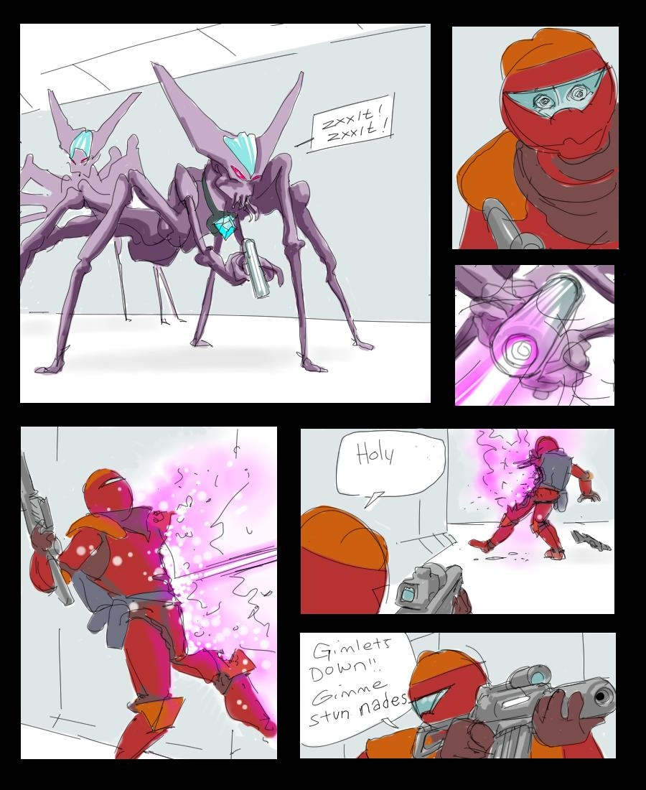

Recon by fire
For those of you curious as to how the game is played, it was summed up like this:
ALL OF YOUR CHARACTERS WILL BE SLAUGHTERED LIKE CATTLE. Don’t expect anyone you roll up in the first week to remain alive for more than twenty four hours. Remember Wierzbowski in Aliens? Of course you don’t. You’re Wierzbowski. Or that guy who takes off his helmet on Omaha Beach in Saving Private Ryan. Expect to have the lifespan of an extra in a John Woo film. Most likely within two seconds of your first contact, you’ll be reduced to bloody chunks. Learn to love it. Don’t get too attached – after all, you don’t have to write letters to their mothers/queen. Learn the ropes, and someday you’ll be able to do the same to the next batch of lambs led to the slaughter.
For those of you trying to figure out the theme of this blog… Well, I’ve got no answers.
This entry was posted on Saturday, May 9th, 2009 at 7:13 AM and is filed under Art, Bughunter, Eschatology. You can follow any responses to this entry through the RSS 2.0 feed. Both comments and pings are currently closed.